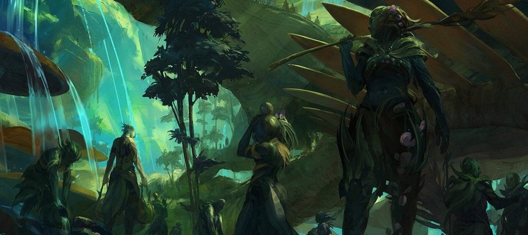

基本的轻量级响应式jQuery幻灯片插件 A flexible, responsive, yet simple jquery slideshow
Example 2
Use of pagination and the startIndex parameters. Note that startIndex is 0-based so startIndex: 3 shows the 4th slide.

- 
Use of pagination and the startIndex parameters. Note that startIndex is 0-based so startIndex: 3 shows the 4th slide.